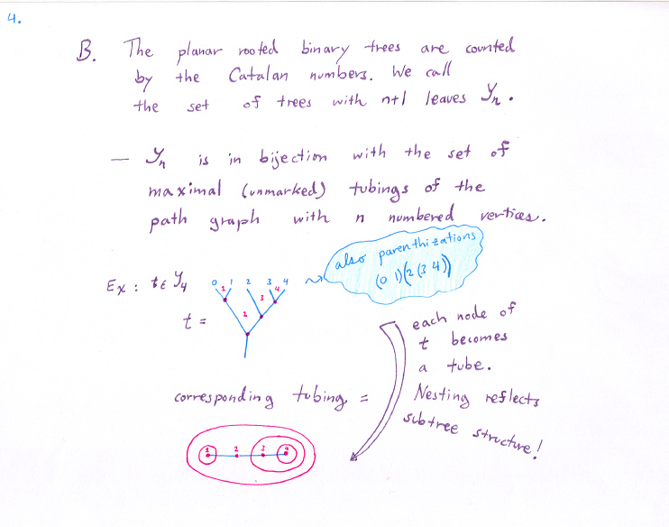

Part 1: Some new ideas, some old ideas, and how they mix.
Binary Trees.
Painted trees.
Hypercubes.
On to Part 1b.
Back to intro.
Back to research page.
The key sources include: S. Devadoss's two papers on graph associahedra, and S.Forcey's paper on multiplihedra.

On to Part 1b.
Back to intro.
Back to research page.
Revision Date: